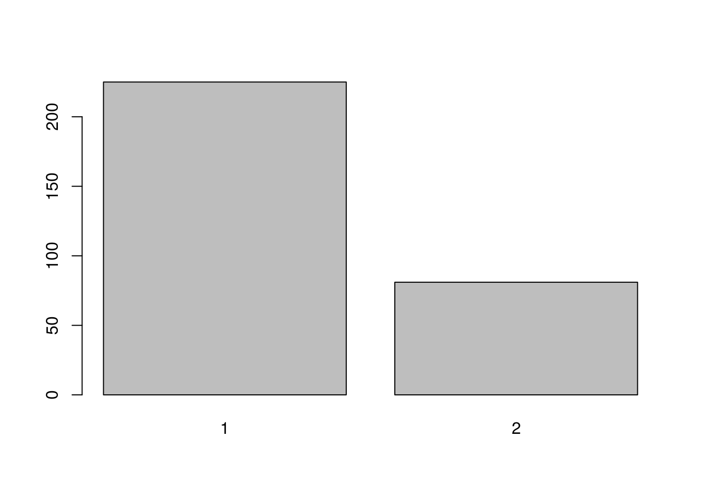
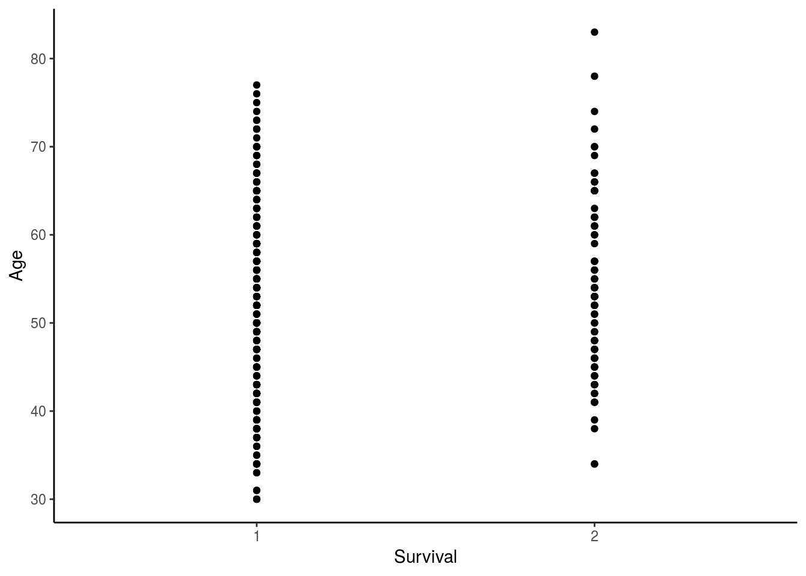

Implementation of Naive Bayes Classifier
What is Naive Bayes?
Naive Bayes is a classification technique based on the Bayes’ Theorem.
According to Wikipedia, Bayes’ Theorem is defined as the probability of an event, based on prior knowledge of conditions that might be related to the event.
For instance, if a disease like diabetes is related to the age of a person, then a person’s age can be used to more accurately assess the likelihood of the person having diabetes based on his age as opposed to predicting probability without making an assessment without prior information.
The Naive Bayes Theorem can be mathematically defined as:
P(A | B) = P(A) * P(B | A) / P(B)
For better understanding, this means: P(diabetes/age) = P(diabetes) * P(age/diabetes) / P(age)
Thus, a Naive Bayes Classifier determines the outcome based on prior information or evidence using this formula.
The assumption is that some attributes like age and likelihood of diabetes are dependent on each other and this assumption helps in determining the probability of new data.
Implementaton in R:
About the dataset:
Attribute Information:
- Age of patient at time of operation (numerical)
- Patient’s year of operation (year - 1900, numerical)
- Number of positive axillary nodes detected (numerical)
- Survival status (class attribute) 1 = the patient survived 5 years or longer 2 = the patient died within 5 year
Step 1: Read data
df_haberman <- read.csv("haberman_data.csv")
str(df_haberman)'data.frame': 306 obs. of 4 variables:
$ Age : int 30 30 30 31 31 33 33 34 34 34 ...
$ Year_of_operation: int 64 62 65 59 65 58 60 59 66 58 ...
$ auxiliary_nodes : int 1 3 0 2 4 10 0 0 9 30 ...
$ Survival : int 1 1 1 1 1 1 1 2 2 1 ...df_haberman$Survival <- as.factor(df_haberman$Survival)Aim is to predict whether enrolment was rejected or accepted based on other attributes using Naive Bayes.
Splitting data into train and testing set sets(80-20)
set.seed(1234)
sample = sample.split(df_haberman, SplitRatio = 0.8)
df_train <- subset(df_haberman, sample == TRUE)
df_test <- subset(df_haberman, sample == FALSE)
df_test_data <- df_test[, c(1,2,3)]plot(as.factor(df_haberman$Survival))
ggplot(data = df_haberman, aes(x = Survival, y = Age)) + geom_point() +
theme_classic()
Naive Bayes’
naive_bayes <- naiveBayes(Survival~Age , data = df_train)
summary(naive_bayes) Length Class Mode
apriori 2 table numeric
tables 1 -none- list
levels 2 -none- character
isnumeric 1 -none- logical
call 4 -none- call Predict:
predict_nb <- predict(naive_bayes, newdata = df_test$Age)Warning in predict.naiveBayes(naive_bayes, newdata = df_test$Age): Type
mismatch between training and new data for variable 'Age'. Did you use
factors with numeric labels for training, and numeric values for new data?predict_nb [1] 1 1 1 1 1 1 1 1 1 1 1 1 1 1 1 1 1 1 1 1 1 1 1 1 1 1 1 1 1 1 1 1 1 1 1
[36] 1 1 1 1 1 1 1 1 1 1 1 1 1 1 1 1 1 1 1 1 1 1 1 1 1 1 1 1 1 1 1 1 1 1 1
[71] 1 1 1 1 1 1
Levels: 1 2conf_matrix <- table(predict_nb, df_test$Survival)
conf_matrix
predict_nb 1 2
1 58 18
2 0 0The confusion matrix has predicted values as rows and the actual values as columns. From the confusion matrix, the conclusion is that 58 instances were correctly predicted as Class 1 whereas 18 were predicted as Class 1 but actually belonged to Class 2.
Thus, the model correctly classified all 58 instances of Class 1 but none of those for Class 2.
The overall ccuracy can be calculated as- 58/(58+18) = 76.31
Applying the Naive Bayes’ model, the model has obtained a 76.3% acuracy.
However, this model only considers Age as one of the factors. The next step will be to build a model with all three attributes to determine whether an improvement in accuracy can be achieved.
naive_bayes_all <- naiveBayes(Survival ~ ., data = df_train)Predict using test data
predict_allAttributes <- predict(naive_bayes_all, df_test[, -1])Warning in predict.naiveBayes(naive_bayes_all, df_test[, -1]): Type
mismatch between training and new data for variable 'Age'. Did you use
factors with numeric labels for training, and numeric values for new data?predict_allAttributes [1] 1 1 1 1 1 1 1 1 1 1 2 1 1 1 2 1 1 1 2 2 1 1 1 1 1 1 1 1 1 1 1 1 1 1 1
[36] 1 1 1 1 1 1 1 1 1 1 1 1 1 1 1 1 1 1 2 1 2 2 1 1 1 1 1 1 1 1 1 1 1 1 1
[71] 1 2 1 1 1 1
Levels: 1 2confusion_matrix <- table(predict_allAttributes, df_test$Survival)
confusion_matrix
predict_allAttributes 1 2
1 54 14
2 4 4The model built using all the attributes in the data gives a different model than the one built using Age.
Here, 54 out of 58(54+4) are corretly classified as Class 1 and 4 out of 18(4+14) of Class 2.
However, the overall accuracy is still calculated as- (54+4)/76 = 76.31%
Thus, the overall prediction accuracy remains unchanged.
)